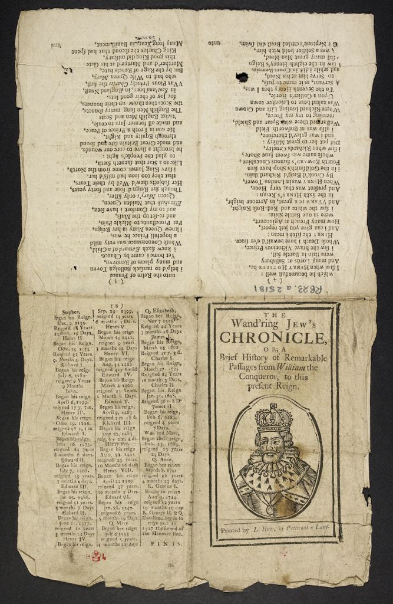

2. The format of the ballad
Format is a fundamental concept in bibliography, which aims to describe books in strictly material terms. It is also an important concept in book history, in which a book's materiality may be related to trade practices, distribution methods, readerly expectations, and the wider context of a book's production and circulation. Textual scholarship, for its part, has rarely emphasised format, more concerned as it is with the book's content, abstracted from its material carrier. Literary scholarship pursued under the banner of material text criticism has recently called attention to how format can shape meaning, whether consciously chosen by an author, publisher or other agent, or as experienced by a reader or owner.[1] Considered bibliographically, then, the earliest known edition of The Wandering Jew's Chronicle is printed in the broadside format, consisting of a single sheet printed on one side, perhaps the simplest of all print publications in its manufacture and certainly one of the oldest. Book history enlarges on this description by pointing out that broadsides were easy and quick to print and suitable for displaying on a wall, like a poster, and were therefore commonly used for public proclamations, news and broadside ballads like the Chronicle.[2] Broadside ballads were printed, displayed, sung and sold in streets, fairs and other public places in large numbers in Britain between the sixteenth and the eighteenth centuries.[3] At least two editions of the Chronicle were printed in another format, as short pamphlets often distributed by travelling pedlars, or chapmen, from which they are usually called chapbooks - a description that more closely resembles a trade format, referring to its method of production and distribution, than a format that can be specified with much bibliographical precision.[4] One side of a printed sheet imposed with four type-pages on each side, to be folded to produce an eight-page chapbook edition of the Chronicle is reproduced below:

Fig. 3. The Wand'ring Jew's Chronicle, a chapbook edition. (H.4).
In terms of the ballad's content, editions of the Chronicle are graphical representations of multiple media. All editions contain a text; most provide the name of a tune to which the text can be sung; and most include illustrations printed from wooden blocks, known as woodcuts.[5] These elements, and the format that bears them, uniquely intersect within the Chronicle tradition while also possessing independent histories of their own. Those recurrent media-elements, or traditions as they might be described (without prejudice or mystification) by textual scholars, contain more complexity and ambiguity than can be described with textual scholarship's customary precision, and for which we might supplement it with the more evaluative methods of disciplines such as literary criticism or visual studies.
[1] See e.g. Katherine O' Brien O Keeffe, 'Editing and the material text', in The editing of Old English: papers from the 1990 Manchester conference, ed. by D.G. Scragg and Paul E. Szarmach, 147-154; Janine Barchas, Graphic design, print culture, and the eighteenth-century novel, (Cambridge University Press, 2003); Juliet Fleming, Graffiti and the writing arts of early-modern England, (Penn Press, 2001); and Zachary Lesser, 'Typographic nostalgia: playreading, popularity and the meanings of black letter', in The book of the play: playwrights, stationers, and readers in early-modern England, ed. by Marta Straznicky, (University of Massachusetts Press, 2006), 99-126; Randall McLeod, 'Un "editing" Shak-speare', SubStance, 10:4, Issue 33-34, (1981 - 1982), 26-55.
[2] Peter Stallybrass, '"Little Jobs": broadsides and the printing revolution', in Sabrina Alcorn Baron, Eric N. Lindquist and Eleanor F. Shevlin (eds.), Agent of change: print culture studies after Elizabeth L. Eisenstein, (University of Massachusetts Press, 2007)
[3] Leslie Shepard, The broadside ballad: a study in origins and development, (Herbert Jenkins, 1962).
[4] Victor E. Neuburg, Chapbooks: A guide to reference material on English, Scottish and American chapbook literature of the eighteenth and nineteenth centuries, (Woburn Press, 1972).
[5] For ballads as literature, see David C. Fowler, A literary history of the popular ballad, (Duke University Press, 1968); as illustrated visual works, see Alexandra Franklin, 'The art of illustration in Bodleian broadside ballads before 1820', Bodleian Library Record, 17, (2002), 327-352; and as songs see Claude M. Simpson, The British broadside ballad and its music, (Rutgers University Press, 1966) and Christopher Marsh, 'The sound of print in early-modern England: the broadside ballad as song', in The uses of script and print, 1300-1700, edited by Julia Crick and Alexandra Walsham, (Cambridge University Press, 2004), 171-190.